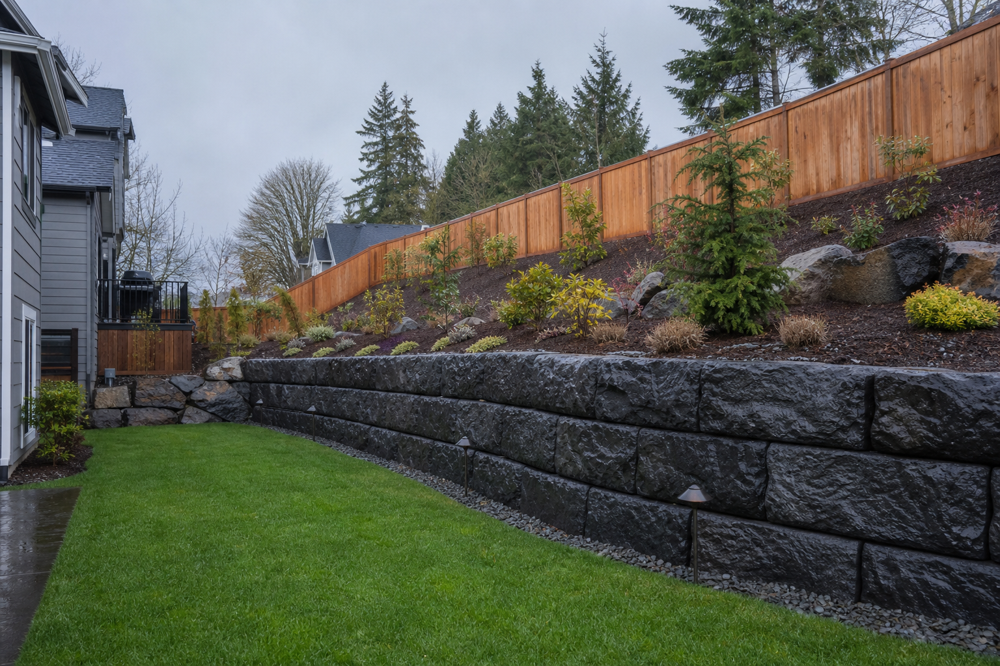
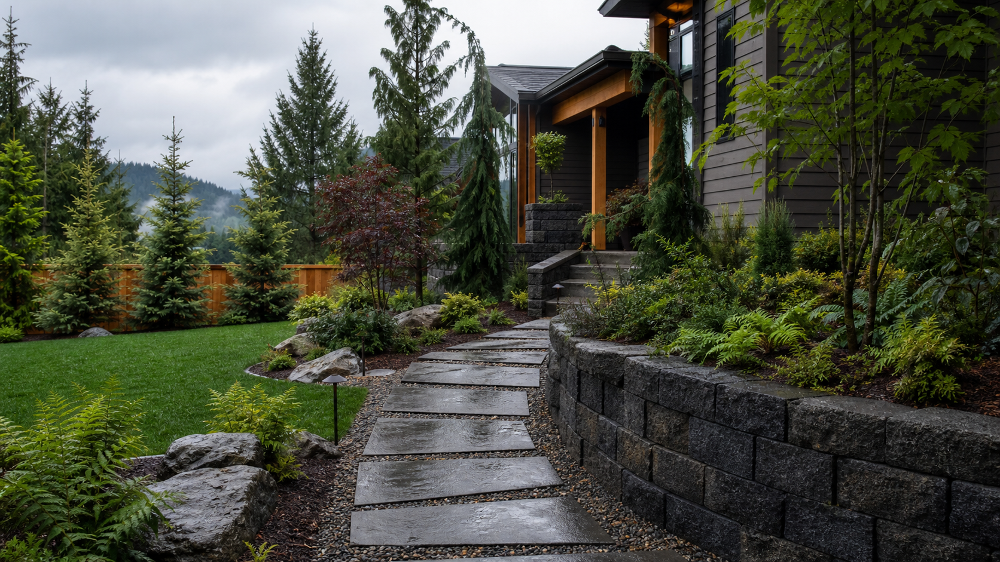
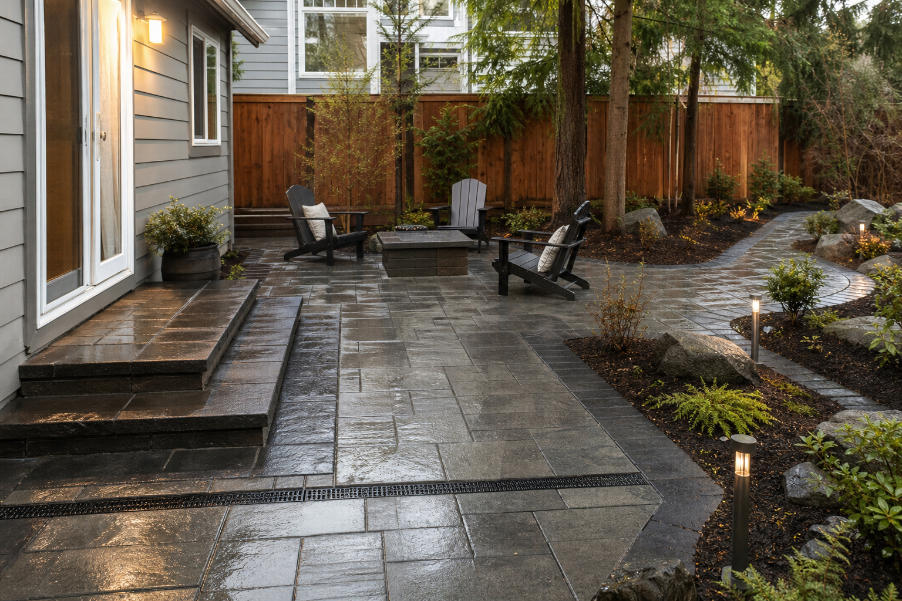
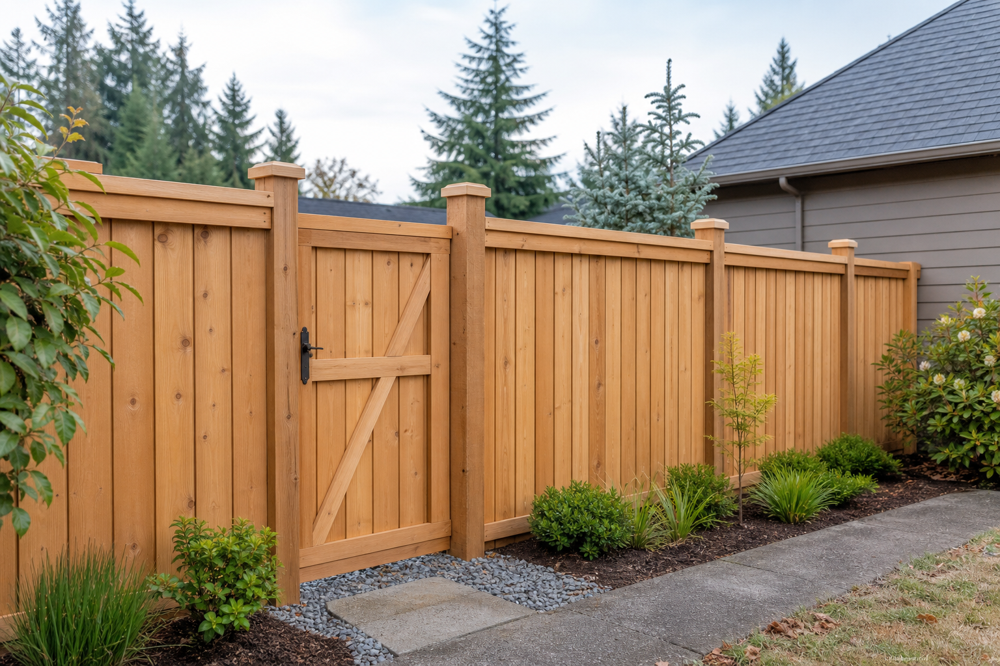
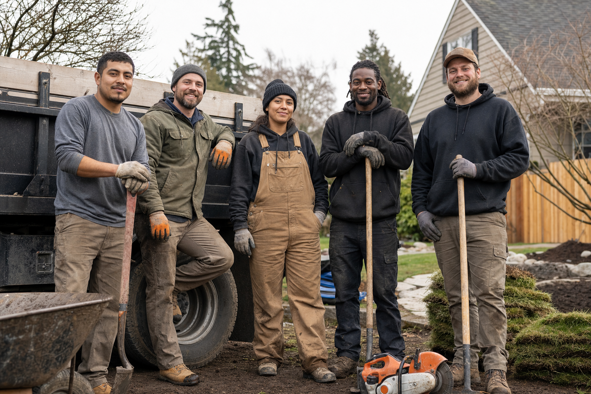

Sample projectAI-generated — not Leonardi work
Monroe, WA · Sample location
Backyard retaining wall
Retaining wall · grading · planting

Residential + commercial · Monroe, WA
Outdoor spaces, built to belong.
Landscape construction, retaining walls, pavers, fencing, irrigation, and more for homes and businesses throughout the Monroe area.
Recent work
These generated samples show the portfolio structure. Replace every red-labeled card with verified Leonardi work before launch.

Retaining wall · grading · planting

Pavers · drainage · landscaping

Cedar fencing · gate · planting edge
What we do
Landscape construction, hardscaping, fencing, and irrigation for residential and commercial properties.
Plan and install practical outdoor spaces for homes and commercial properties.
Build durable outdoor surfaces and structures for Northwest weather and drainage.
Install, repair, stain, paint, and weatherproof fences and gates.
Install and repair irrigation while addressing existing landscape problems.
Why Leonardi
Western Washington properties bring real constraints. These suggested differentiators show how Leonardi could explain its approach once the team confirms each claim.
Runoff, grading, and heavy rainfall are considered from the start.
Slopes, access, retaining walls, irrigation, and existing landscapes are part of the plan.
Landscaping, hardscaping, fencing, and irrigation can be coordinated together.
A clear path forward
Confirm these steps and timing before the site goes live.
Tell us about the property, priorities, and the work you have in mind.
Meet on site to review access, conditions, materials, and project fit.
Align on scope, selections, scheduling, and a written project estimate.
Coordinate the work through installation and a final project review.

Meet the team
Leonardi Landscaping is a Monroe-based landscape construction company serving residential and commercial properties with hardscaping, fencing, irrigation, repairs, and design.
Add the owner’s story, years of experience, crew size, specialties, and communities served.
Customer feedback
One positive Yelp review is available. The red cards demonstrate how additional verified, project-specific reviews could appear.
“Communication [was] very clear and effective. He steered me to options that I found excellent.”Cris B. · Seattle, WARead on Yelp ↗
“The crew rebuilt our retaining wall and left the site clean every evening.”Sample homeowner · Monroe, WARetaining wall + landscaping
“The new patio drains well and finally makes the backyard usable year-round.”Sample homeowner · Snohomish, WAPaver patio + drainage
Request a quote
Share a few details and Leonardi can follow up to discuss the work and next steps.
Prefer to call?(425) 422-6199↗Connect this to Leonardi’s preferred email or form service before launch.